WEICOT设计制版工具(20201219-v1.9)
易定制供应链默认设计器(weicot 设计工具)

易定制供应链默认设计器(weicot 设计工具 企业版)

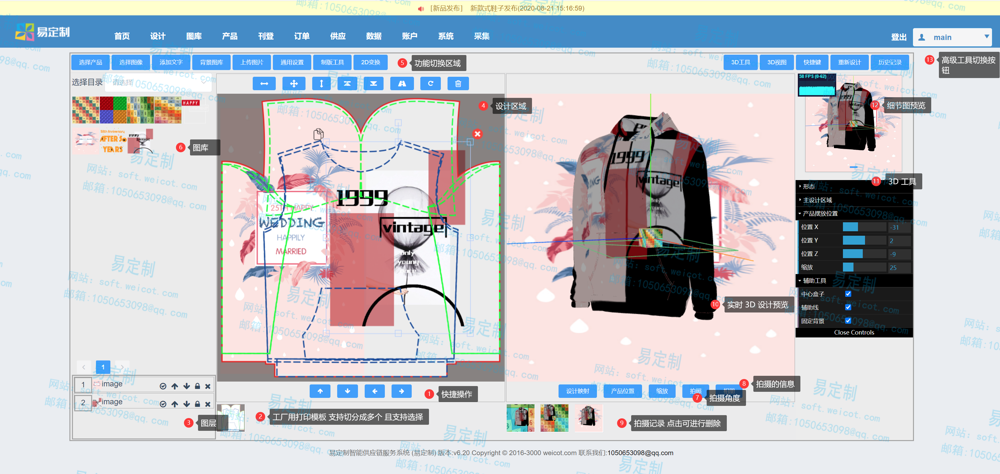
制作产品设计模板
设计后效果图
制作工厂打印模板
2D 简易模板
设计后效果图 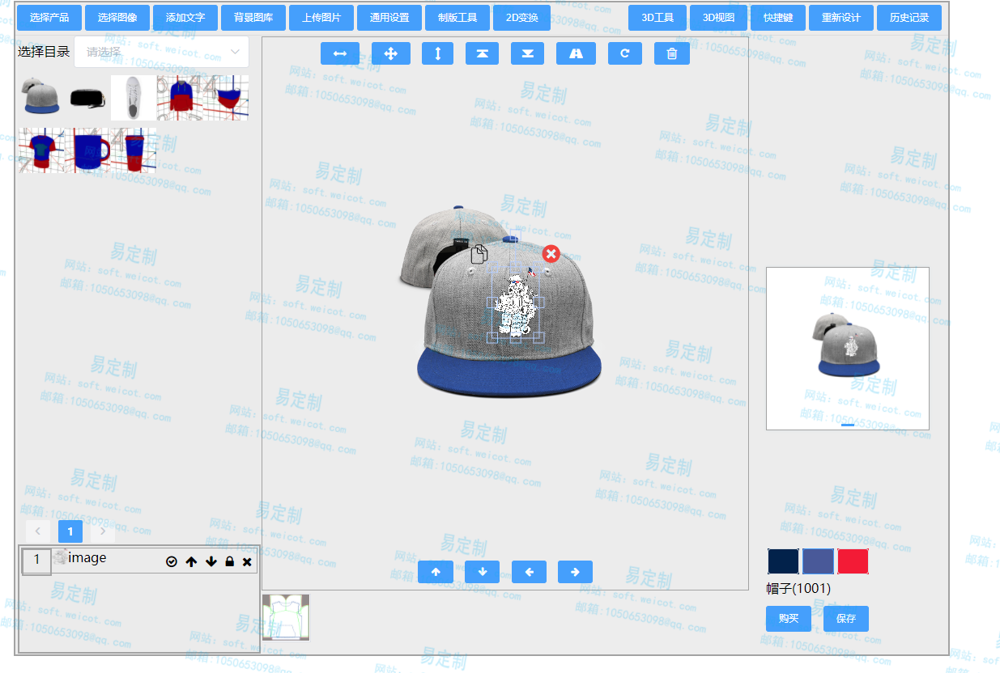
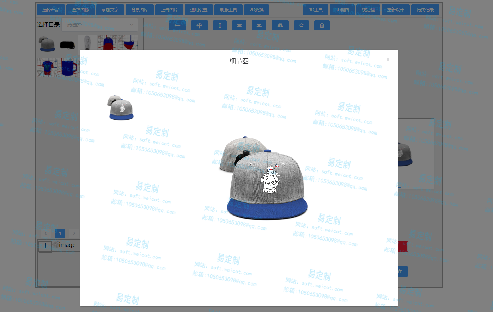
使用3D设计器进行产品设计
设计后效果图
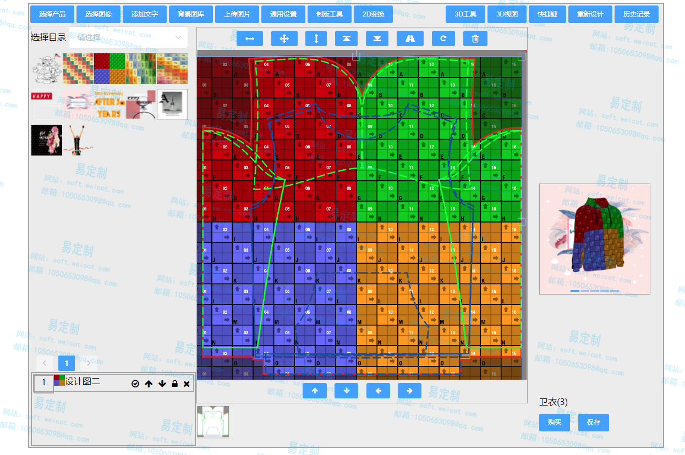
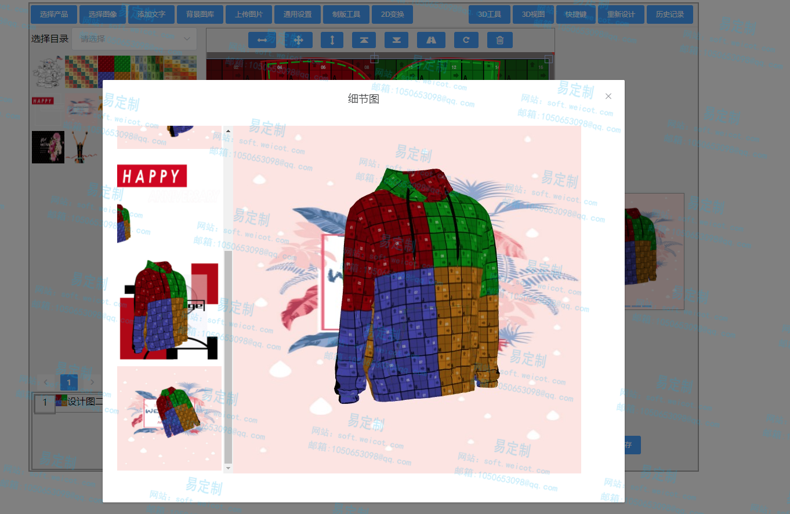
制作3D细节图渲染模板
设计后效果图 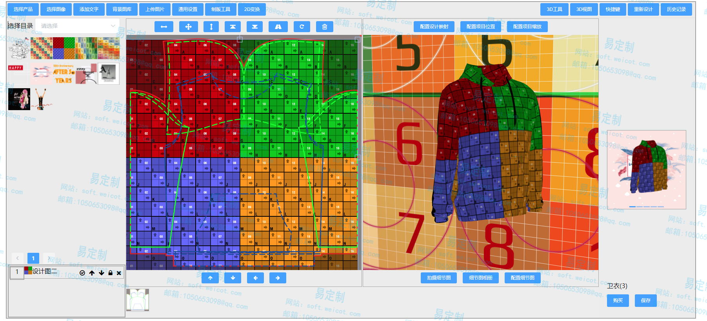
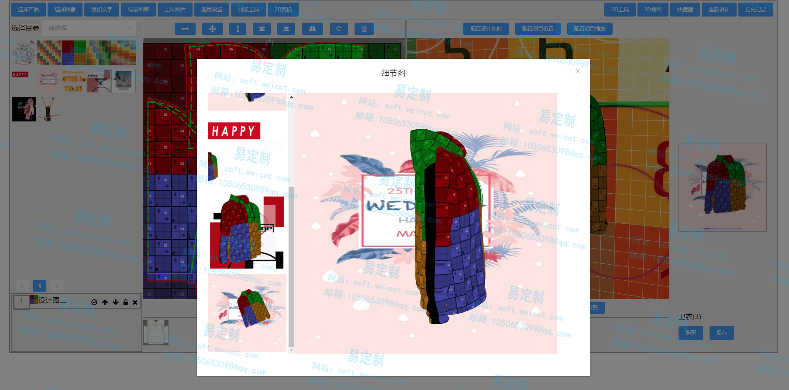
基于产品3D模型的设计
- 更改背景图像：从我们的资料库中选择一个背景图像，或者从您的个人计算机中选择一个。
- 选择您的产品：选择四种产品之一以查看其3D渲染。在咖啡杯，水壶，T恤和咖啡杯之间选择。
- 更改产品上的图像：从个人计算机上选择要放置在3D产品上的图像，然后查看其实际适合该产品的方式。
- 更改产品的颜色：从选择器中选择一种颜色，以查看您的产品在现实生活中的外观。
- 360度检视：360度检视您的产品。暂停并播放360度旋转，以更好地查看产品。
- 保存照片：从任何角度拍摄3D模型的快照并将其保存在您的PC上以供以后查看
设计后效果图
制作超2D模板
设计后效果图 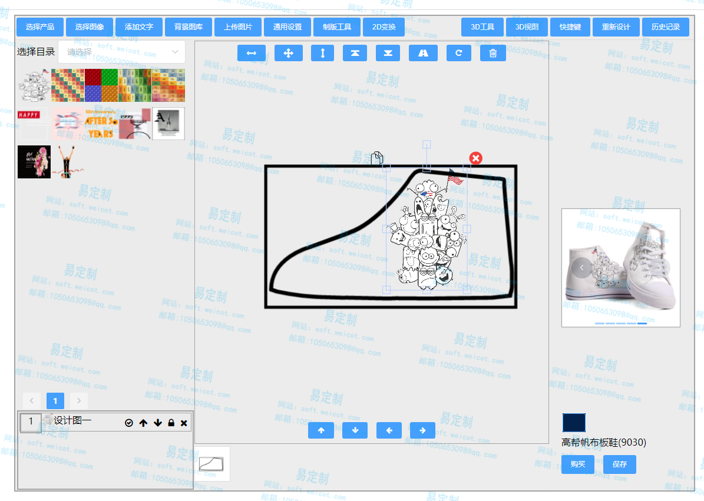
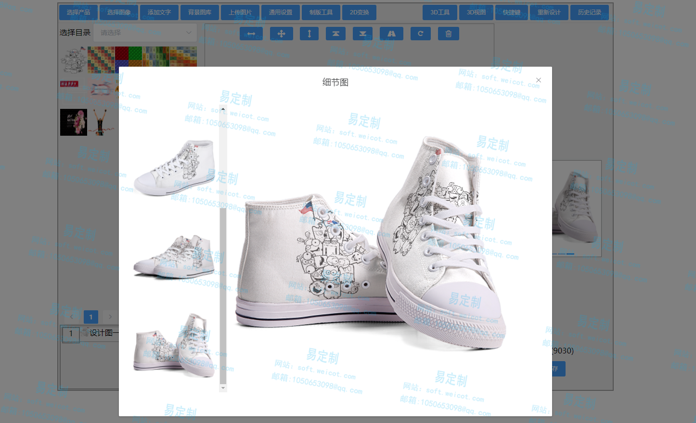
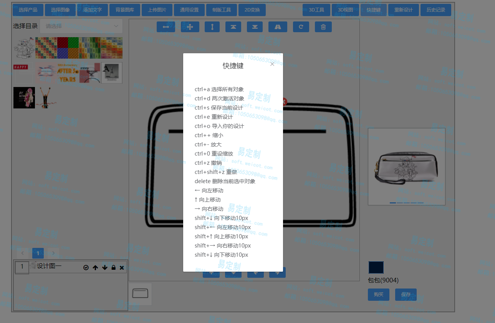
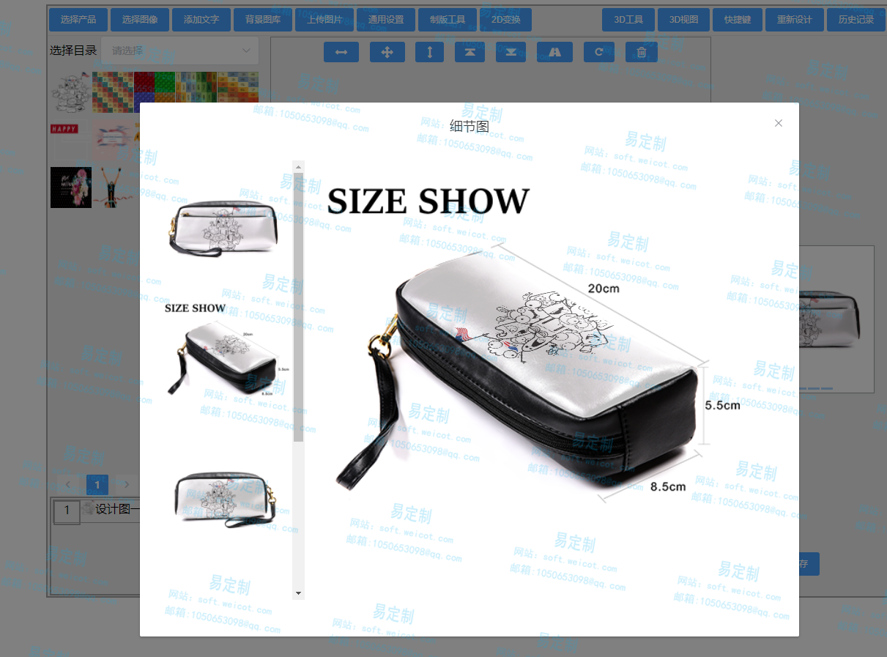